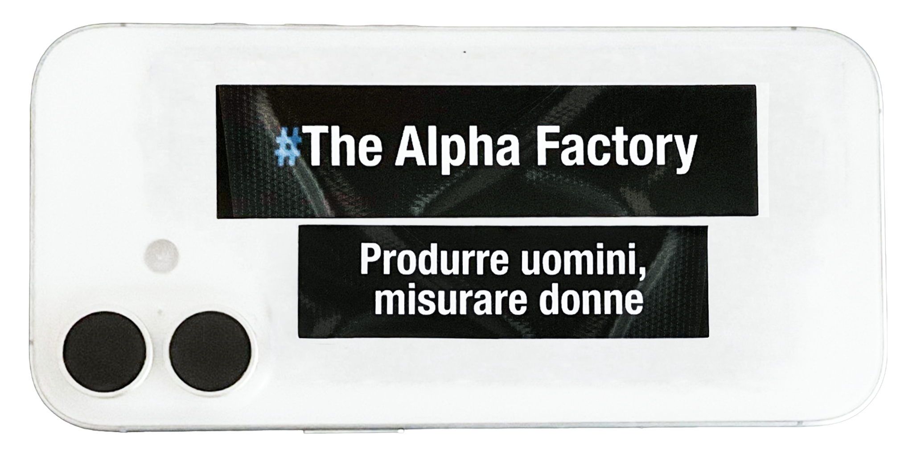

Ogni sistema di misura nasce con la promessa di descrivere il mondo, ma prima di registrarlo ne stabilisce le condizioni di leggibilità. Il dato risultante non è una semplice rappresentazione del reale, ma l’esito di un processo che seleziona, ordina e attribuisce valore.
#The Alpha Factory e All Fields Required* raccontano questa dinamica da due prospettive speculari. Da un lato, un modello di mascolinità che riduce la donna a parametro di attrazione, status e successo; dall’altro, un sistema che richiede di tradurre la propria identità in informazione ancora prima di poter accedere al lavoro.
In un caso il corpo diventa metrica, nell’altro il profilo diventa risorsa. La mostra invita a interrogare non solo ciò che viene misurato, ma i sistemi che lo rendono possibile. Perché ogni dato descrive il mondo solo dopo aver contribuito a costruirlo.
Every system of measurement is born from the promise of describing the world, but before recording it, it defines the conditions through which it becomes legible. The resulting data is not a simple representation of reality, but the outcome of a process that selects, orders and assigns value.
#The Alpha Factory and All Fields Required* tell this dynamic from two mirrored perspectives. On one side, a model of masculinity that reduces women to a parameter of attraction, status and success; on the other, a system that requires identity to be translated into information even before access to work becomes possible.
In one case the body becomes a metric, in the other the profile becomes a resource. The exhibition invites us to question not only what is measured, but the systems that make measurement possible. Because every piece of data describes the world only after helping to construct it.
